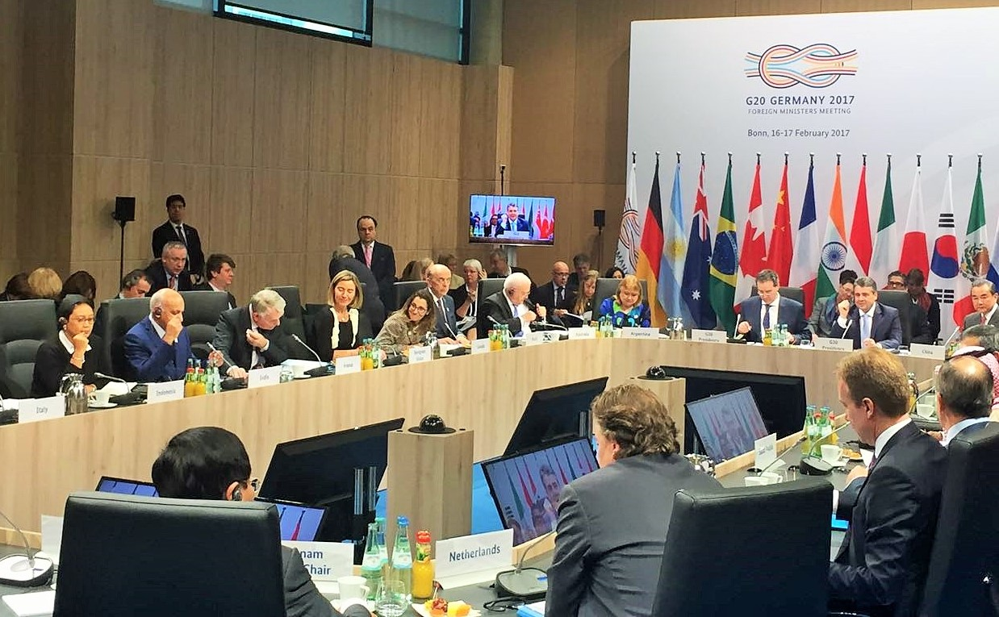

Kerjasama multilateral adalah kerjasama antara tiga negara atau lebih yang diselenggarakan oleh bangsa-bangsa / internasional di dunia tanpa memandang wilayah untuk kepentingan tertentu dan mencapai tujuan bersama, seperti menyelesaikan masalah global atau regional. Indonesia aktif terlibat dalam berbagai bentuk kerja sama multilateral untuk memperkuat hubungan internasional dan mendukung kepentingan nasional. Beberapa contoh kerja sama multilateral yang telah dilakukan oleh Indonesia antara lain adalah PBB (Perserikatan Bangsa-Bangsa), di mana Indonesia berpartisipasi dalam memajukan perdamaian, keamanan internasional, dan pembangunan yang berkelanjutan. Indonesia juga bekerja sama dengan IMF (International Monetary Fund), WTO (World Trade Organization), ILO (International Labour Organization), FAO (Food and Agricultural Organization), AFTA (ASEAN Free Trade Area), ECOSOC (Economic and Social Council), OKI (Organisasi Kerjasama Islam) dan GNB (Gerakan Nonblok). Melalui kerja sama multilateral ini, Indonesia dapat memperkuat posisi internasionalnya, berkontribusi pada stabilitas global, serta mendukung pembangunan ekonomi dan sosial yang saling menguntungkan.